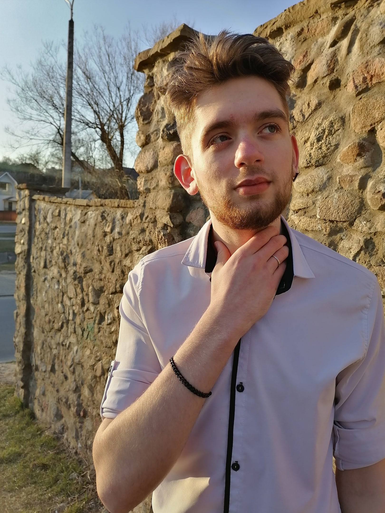

Summary
My main goal is to become good frontend developer. For it I always practise, for example I have tried to make websites since last year and now I am going to english courses.
Expirience
Made website using HTML and CSS (flex) - https://neotraly.github.io/project.io/
Learned HTML, CSS and PHP in college
Played CS:GO for 3000 hours
Education
Studying in college (programmer). Studying in english courses.
English
A1 (but now I am learning english in courses).
Code Examples
https://neotraly.github.io/project.io/ https://www.codewars.com/users/neotraly

Name
Denis Zylev
Contact info
Number: +375255021930 E-mail: denis.zylev2016@gmail.com
Skills
HTML/CSS, JS, SQL, VBA, PHP, C#, Pascal/Delphi, Git.